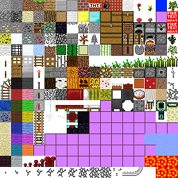

Oops ... your browser doesn't support the HTML5 canvas element
Place block:
Stone
Grass
Dirt
Wood
Metal
Water
Fire
Daylight control:
World generator:
Generate world!
NOCLIP
Usage:
Click the canvas to enable the game.
Move around using 'WASD' or Arrow keys.
Jump using 'SPACE' (or float up in no-clip mode, use 'C' to float down)
Look around using the mouse.
Enable map-mode using 'M'
Change between orthogonal and perspective projection using 'P'
Hold 'T' and click with the mouse to determine the block under the mouse, using offscreen render buffer.
(Max world size for offscreen rendering is 7 (129xYx129))
See console for interresting information!
